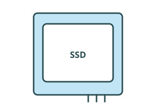

Bits
A bit is the smallest unit of data
A bit is a binary digit. Its value is either 0 or 1.
0Off
or1On
For example, 0 and 1 can represent an off state and an on state.
Bit patterns
More bits give more possible patterns
Each extra bit doubles the number of possible patterns.
1 bit → 2 possible patterns
01Computers use bit patterns to represent text, numbers, images and sound.
Data units
From bytes to terabytes
8 bits = 1 byte. Larger units describe larger amounts of data.
- ByteB
- KilobyteKB
- MegabyteMB
- GigabyteGB
- TerabyteTB
Smaller units Larger units
Choosing a unit
Why do we need different units?
4 KB
5 MB
80 GB

2 TB
Larger units keep large numbers easy to read.
These are example sizes. Actual sizes vary.
Unit conversion
Two systems: 1000 or 1024
Decimal: steps of 1000
- 1 KB = 1000 bytes
- 1 MB = 1000 KB
- 1 GB = 1000 MB
Binary: steps of 1024
- 1 KiB = 1024 bytes
- 1 MiB = 1024 KiB
- 1 GiB = 1024 MiB
How to decide which one to use
Follow the system stated in the question. KiB, MiB and GiB use 1024. KB, MB and GB normally use 1000, unless the question states otherwise.
To a smaller unit: multiply.
To a larger unit: divide.
Convert units
Convert one step at a time
Practise conversions
Conversion workshop
Use steps of 1000 or 1024. Answers using either system are accepted. Round to 2 or 3 decimal places if needed.
0 / 12 completed
Bits and bytes
MB and Mb mean different things
Megabytes
Capital B means bytes.
File sizes and drive capacity usually use bytes.
800 MBFile size
Megabits
Lowercase b means bits.
Connection speeds usually use bits per second.
Sender
80 Mb/s →Each second
Receiver/s means "per second". MB/s is megabytes per second; Mb/s is megabits per second.
Convert bits and bytes
Bits to bytes: divide by 8
| Unit | Base | Kilo | Mega | Giga |
|---|---|---|---|---|
| Bits | b | Kb | Mb | Gb |
| Convert | ↓ ÷8 ↑ ×8 | ↓ ÷8 ↑ ×8 | ↓ ÷8 ↑ ×8 | ↓ ÷8 ↑ ×8 |
| Bytes | B | KB | MB | GB |
Bits → bytes
80 Mb ÷ 8 = 10 MB
Bytes → bits
10 MB × 8 = 80 Mb
Use the same rule for rates: 80 Mb/s ÷ 8 = 10 MB/s.
File transfer time
How long will the transfer take?
File size 800 MB
Connection speed 80 Mb/s
Convert the speed to megabytes per second
Speed in Mb/s ÷ 8 = speed in MB/s
80 ÷ 8 = 10 MB/s
Divide the file size by the speed
File size in MB ÷ speed in MB/s = time in seconds
800 ÷ 10 = 80 seconds
This assumes a constant speed with no extra data sent. A real transfer may take longer.
Practise transfer times
How long will each file take?
First divide the speed by 8. Then divide the file size by that answer. Assume a constant speed with no extra data sent.
Check your understanding